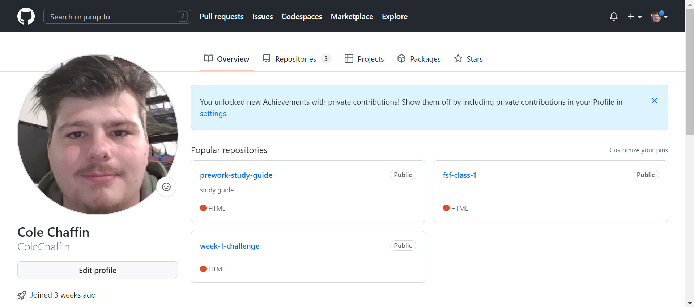
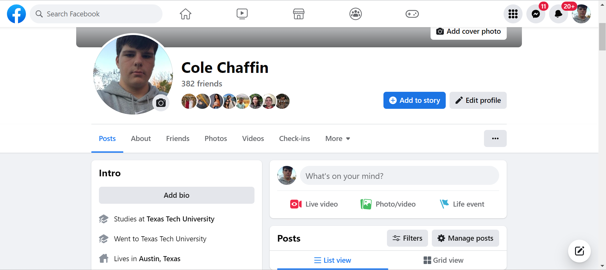

this is a recently generated website that i consolidated code for.
This is my current GitHub Repositories!
My facebook!
My name is Cole Chaffin, I grew up in Austin,TX where all my family still resides! Austin is a beautiful town and growing in size exponentially. I've stayed in austin solely for the opportunities it has brought me, my job, this bootcamp, and of course my family. I went to Texas Tech for two years before realizing that i wanted something different, so i moved back and began my journey in web development!